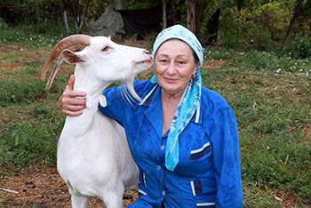
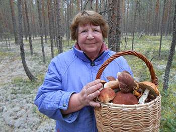
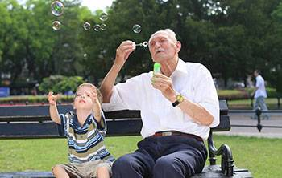
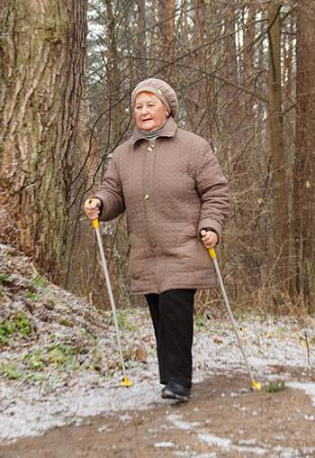
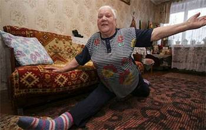
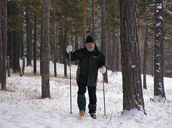
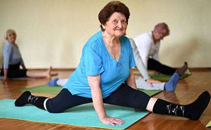
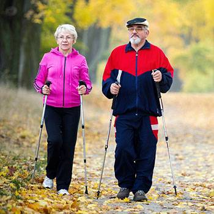
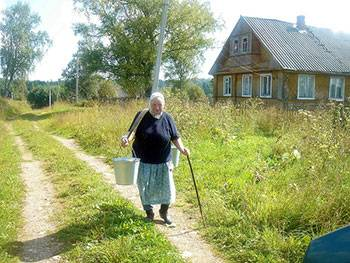

, 09:04
От редакции: обязательно дочитайте до конца! Дальше интервью с известным врачом С. М. Бубновским, в котором он честно расскажет, как быстро, эффективно и ДЁШЕВО восстановить суставы и забыть о боли навсегда!
Корреспондент: Владимир, здравствуйте. Спасибо, что согласились дать эксклюзивное интервью нашему изданию. О Вашем здоровье ходит много слухов. Многие ваши коллеги по съёмочной площадке рассказали нам о том, что вы едва не ушли из кино навсегда. Неужели это правда?
Владимир Машков: Здравствуйте. К сожалению, да, это не выдумки. Я чуть не оказался в инвалидном кресле… Трагическая болезнь не так долго мучала меня, но те 2 месяца адской боли и беспомощности я запомню навсегда.
Корреспондент: Что случилось? Как Вы оказались в такой ситуации?
Владимир Машков:Моя профессия предполагает чрезмерные физические нагрузки. Особенно эта нагрузка ложится на суставы ног. Многолетние репетиции, съёмки, съёмки и еще раз съёмки, живые выступления… 18 часов в сутки я постоянно на ногах, да еще режиссёры заставляют быть то шпионом, то солдатом, то врачом. Приходится прыгать, бегать, кувыркаться, вскарабкиваться куда-то, падать… а я ведь не молодой… не щадили мои суставы и, как сказал один доктор «твои суставы превратились в труху».
Слышать такое было страшно! Это означало конец моей карьере и приближающуюся инвалидность. Но тогда я не осознавал всей опасности. Продолжал работать, участвовать в разных шоу, соглашался на спектакли, сериалы, гастроли. И это было большой ошибкой.
Перед тем, как выйти на сцену, я делал себе обезболивающий укол, а после спектакля глотал пачками таблетки, чтобы уснуть и не чувствовать боли.
Мои колени почти перестали сгибаться. Голеностоп постоянно отекал так, что я не мог надеть обувь. Я с трудом передвигался, но продолжал работать. Ну не мог я бросить свой театр, коллег, режиссеров. Тем более я не мог сорвать запланированные спектакли. Врачи запрещали мне работать, грозили инвалидным креслом. Но я никого не слушал, запустил проблему и поплатился за это…
Хочу обратиться ко всем! Не повторяйте моих ошибок! Если у вас болят суставы — это серьёзно! Болезнь прогрессирует очень быстро и может сделать вас инвалидом всего за полгода!
Корреспондент: Вы обращались к докторам? Получали какое-то лечение?
Владимир Машков: Да, я обращался к докторам. Для меня заказывали дорогие зарубежные препараты. Каждый раз я надеялся, что вот это-то немецкое или австрийское средство мне точно поможет, но результата не было. Я потратил огромные деньги на мази, таблетки, уколы, процедуры — но все было бесполезно.
Если мне не помогло дорогостоящее лечение, что уж говорить о простых людях, которые вынуждены лечиться аптечными препаратами и ходить в районные поликлиники. Мне их искренне жаль…
Но когда на пару месяцев я стал нетранспортабельным, лежачим человеком… Убить себя хотел - родные не дали. Лежал как… не знаю кто! Овощ? Не то слово. Стал обузой для родных, бесполезным отцом для детей, никчемным мужем для жены, бесполезным сыном для матери и ненужным для коллег. Не мог даже сходить в туалет или принять душ, не мог приготовить еду даже. Просто позорище.
Это так отвратительно — чувствовать себя бесполезным, никому не нужным, забытым, одиноким. Мне перестали звонить друзья, все обо мне забыли… Я погрузился в депрессию, не мог выйти без помощи на улицу. Да и не хотел: как представлю на улице СМИ, папарацци. Потом заголовки: «Машков смертельно болен».
Да, смертельно болен, но это не ваше собачье дело!
Болезнь, боль, одиночество, беспомощность — это очень страшно! Я такого не пожелаю даже самому заклятому врагу!
Корреспондент: Как Вам удалось встать на ноги? Вы снова стали постоянно появляться в телевизоре, играть спектакли, исполнять новые роли.
Владимир Машков: Мне помогло чудо! По-другому я не могу сказать. Судьба свела меня со знаменитым доктором Бубновским. Познакомились на одной передаче лет 12 назад. Я позвонил, и Сергей Михайлович меня принял.
Он дал мне крем, сказал, что он на основе редких компонентов и так просто его не достать. Честно признаться, я перепробовал уже много всего и не верил, что этот крем мне поможет. Но уже через пару дней, я почувствовал себя гораздо лучше.
Корреспондент: Только благодаря крему?
Владимир Машков: Да, я и сам был ошарашен. Суставы перестало «крутить», ушла боль, я смог впервые за долгие месяцы выспаться! И с каждым днем мне становилось все лучше и лучше. Через две недели я смог встать с кровати и сам, держать за стену дошел до туалета. Это была первая победа! И это средство мне дал Сергей Михайлович Бубновский, не перестану его благодарить!
Через месяц я уже мог передвигаться по квартире. Ноги не опухали, отек спал. Боль практически ушла, вернулась подвижность, я мог сгибать колени.
После 1,5-2 месяцев я вернулся к работе. Мои коллеги сильно удивились, увидев меня. «Володя, как так? Ты же…». Они были в шоке — всего пару месяцев назад я был беспомощным инвалидом, а сейчас стою на своих ногах и ношусь по сцене в роли солдата!
Корреспондент: Я очень рада, что все закончилось благополучно! Какие у Вас планы на будущее? Чем порадуете нас в скором времени?
Владимир Машков: Планов у меня огромное количество! Продолжаю играть в спектаклях аж в двух театрах столицы, да еще и езжу на гастроли. Снимаюсь для социальных реклам. А весной моих дорогих зрителей ждут еще две громкие премьеры, но это пока секрет.
Корреспондент: Спасибо большое, Владимир, за откровенное интервью! Будьте здоровы и радуйте нас своим творчеством как можно дольше!
Владимир Машков: Спасибо! Всем желаю здоровья — это самое главное в жизни!
Сергей Михайлович рассказал, как спасти себя от инвалидного кресла и быстро избавиться от артроза, артрита, остеохондроза и других заболеваний суставов.
Корреспондент: Здравствуйте, Сергей Михайлович! По данным ВОЗ в нашей стране заболеваниями суставов страдает каждый третий человек. Чем вызвана такая «эпидемия»?
С. Бубновский: Здравствуйте. К несчастью, Вы правы. Количество заболеваний суставов стремительно растет. И если раньше моими пациентами были в основном люди преклонного возраста, то сегодня все чаще ко мне обращаются 30-40 летние молодые люди.
И самое страшное, что в нашей стране люди не готовы уделять достаточно внимания своему здоровью. Пациенты терпят до последнего и приходят ко мне, когда уже изнемогают от боли и теряют возможность жить нормальной жизнью. Ведь гораздо проще сходить в аптеку, купить обезболивающую мазь, намазать больной сустав — и снова в огород на прополку!
Запомните! Аптечные средства только маскируют симптомы. Они не решают проблему и не избавляют от артроза и артрита. Вы просто теряете время и приближаете свою инвалидность!
Посмотрите на эти снимки, вы видите, что на правом снимке суставная щель отсутствует, кости трутся друг о друга, вызывая сильнейшую боль. И этот процесс очень сложно остановить! Через пару лет человек станет инвалидом и не сможет себя обслуживать.
Корреспондент: Каковы причины заболеваний суставов?
С.М. Бубновский: Прежде всего, это травмы и серьезные нагрузки. Лишний вес также оказывает сильное давление на суставы.
Малоподвижный образ жизни, стрессы, обилие соли и сахара в пище — все это размягчает хрящевую ткань, изнашивает и истончает ее. От каждого нового движения хрящ стирается и деформируется, кости начинают тереться друг о друга, вызывая нестерпимую боль.
Ревматоидный артрит и остеоартроз способны привести к инвалидности через 3-5 лет после старта болезни и сокращают продолжительность жизни больных на 15-20 лет!
К сожалению, многие пациенты пропускают первые симптомы заболевания, пуская все на самотек и приходят к врачам тогда, когда уже слишком поздно. Нередко я сталкиваюсь и с самолечением, иногда с самыми абсурдными способами, вроде оборачивания суставов капустным листом, намазыванием медом и так далее.
Не шутите с артрозом и артритом! Заболевания суставов доведут вас до инвалидного кресла менее чем за 3 года!
Корреспондент: Когда пора бить тревогу? Какие симптомы должны насторожить?
С.М. Бубновский: Насторожить должны такие симптомы, как:
Корреспондент: Как помочь людям? Мы знаем, что Вы помогли Владимиру Машков встать с инвалидного кресла. Расскажите об этом, пожалуйста.
С.М. Бубновский: Наука не стоит на месте. Сегодня есть инновационные средства, которые способны на многое. И даже поднять с инвалидного кресла. Но, к сожалению, в поликлинике такие средства не выпишут и в аптеке вы их не купите.

Разве выгодно продавать то, что избавит от проблем с суставами навсегда? Нет, им выгодно продавать средства, к которым больные привыкли и используют их постоянно. К сожалению, аптеки — это бизнес. Лавка, где продаются пустышки, которые помогают не суставы лечить, а выкачивать деньги из больных людей.
Корреспондент: О каком эффективном средстве Вы говорите? Что помогло Владимиру Машкову?
С.М. Бубновский: Не только Владимиру, но и тысячам обычных людей. Я говорю о средстве Arthron Meridian. Разработке нашего НИИ Ревматологии. Поистине уникальная и, я бы сказал, революционная разработка наших ученых. Это полностью натуральный крем, который способен восстановить сустав на клеточном уровне. При курсовом применении, разумеется.
В составе геля Arthron Meridian большой комплекс растительных экстрактов и биоактивных компонентов с высокоактивной молекулярной структурой.
Не буду перечислять их все, расскажу о главных компонентах:
Помимо того, что средство быстро и эффективно подавляет воспаление, восстанавливает все обменные процессы и запускает регенерацию хрящей и суставов, этот крем даёт ещё и комплексный оздоравливающий эффект для всего организма. Смотрите сами:
1. Суставы и позвоночник восстанавливаются
98,3% пациентов избавились от болей в суставах и позвоночнике. Это практически стопроцентный результат! Такого я никогда раньше не встречал, ни одно средство не показывало такую эффективность.
Благодаря своему природному составу и отсутствию химии и ГМО, Arthron Meridian борется с причиной появления болезней. С его помощью удается избавиться от отечности, воспаления и боли в суставах и полностью восстановить их функции в домашних условиях всего за 1,5-2 месяца.
2. Снижается риск инсульта и инфаркта
Артрит, артроз, радикулит, подагра и другие болезни суставов сопровождаются резким и масштабным распространением воспалительных процессов в организме. Происходит внезапный скачок всех основных показателей, таких как СОЭ, уровень эритроцитов и тромбоцитов, а это прямая угроза сердцу.
За счет того, что Arthron Meridian надежно купирует воспаление, в 7 раз снижается риск инфаркта и инсульта в острой фазе ревматоидных заболеваний.
3. Повышается иммунитет
В ходе курсового применения Arthron Meridian у пациентов отмечалось общее улучшение кровоснабжения костного мозга, который занимается производством иммунных клеток. Это приводит к усилению защитных сил организма.
Иммунитет, который работает хотя бы на 50%, уже является непреодолимой преградой для вирусов. А это сегодня тоже очень важно.
Крем Arthron Meridian также:
Если подвести краткий итог, могу сказать, что Arthron Meridian:
Корреспондент: Действительно, впечатляет! Неужели такое эффективное средство не попадет в аптеки и простые люди не смогут им воспользоваться?
С.М. Бубновский: Как я уже сказал, аптекам невыгодно торговать средствами, которые восстанавливают суставы навсегда и на которые нельзя накрутить 500-600%. Arthron Meridian — именное такое средство.
Его разработкой занимались государственные научные структуры, поэтому частные аптеки в этом средстве не заинтересованы, так же, как они не заинтересованы в здоровье простых людей.
Почему так происходит? Пока люди тратят огромные деньги в аптеках на бесполезные пустышки и скручиваются от боли в адских муках, вот такие вот “хозяева” аптечных сетей и продажные врачи не хотят пропускать на рынок средство, которое может стать решением всех этих проблем.
Мы безусловно боремся с ситуацией, но пока нам приходится искать возможности распространять Arthron Meridian среди тех, кому он действительно нужен и стараемся разрабатывать такие меры поддержки.
Корреспондент: О каких именно мерах поддержки Вы говорите?
С.М. Бубновский: Я говорю об акции, которую запустил производитель Arthron Meridian совместно с ФГБНУ НИИ Ревматологии им. В.А. Насоновой. В рамках этой акции получить Arthron Meridian со скидкой до 100% может каждый гражданин, соответствующий условиям льготного распространения.
Средство можно получить через официальный розыгрыш, так как на всех желающих его не хватает, что неудивительно — люди передают информацию об этом средстве друг другу, и ажиотаж растет с каждым днем.
Корреспондент: Спасибо, Сергей Михайлович, мы обязательно разместим всю необходимую информацию для наших читателей.
Условия получения Arthron Meridian по акции:
Воспользоваться акцией могут граждане, имеющие постоянную регистрацию в РФ.
Это нужно для борьбы с перекупщиками, которые пытаются массово получать Arthron Meridian и перепродавать его со своей наценкой.
Акционных упаковок ограниченное количество, поэтому производитель реализует их через розыгрыш. Выберите одну из матрешек ниже, чтобы получить 100% скидку по акции.
ВНИМАНИЕ! Последние исследования подтвердили, что наиболее благоприятный период для начала использования Arthron Meridian — и ! Изменения температуры способствуют ускорению обмена веществ и более быстрому восстановлению суставов.
%

%
%

Очень рады! Спасибо за такую выгодную акцию. Заказала со скидкой, прислали не обманули.
Заказала по акции со скидкой, очень надеюсь что поможет. Сил уже нет, артроз замучил.
Здравствуйте. Знаю какой это ад болезни суставов не понаслышке. Ноги сильно болят, а у меня хозяйство, скотина. Столько всяких средств уже испробовала и народных и из аптеки, и все бестолку, только хуже становится. Решилась поучаствовать в розыгрыше и получила хорошую скидку! Думаю, была не была, и заказала этот Arthron Meridian. Забрала с почты две недели назад. Уже полегче стало, занимаюсь хозяйством потихоньку.
Очень нужен Arthron Meridian этот, регион не участвует в программе, что мне делать?
Прошла полный курс Arthron Meridian. У меня настолько изменилось самочувствие. Я как-будто ощущаю себя на 20 лет моложе. Колено не болит, могу все дела делать, ходить до дачи и в лес по грибы. Бодрая, активная, замечательное средство этот Arthron Meridian! Очень понравился!
Людмила, Ох хороши грибочки у Вас! Это где такие водятся? А крем хороший, тоже заказал себе и матери, пользуется.
Ответить
Олег, это у нас в Кировской области, приезжайте!
Ответить
Хорошее средство, помогло снять боль в спине. Я спину сорвал на работе, за день меня Arthron Meridian на ноги поставил.
У меня артроз вследствии футбольной травмы. Колено болит постоянно, не дает нормально жить. Попробовал Arthron Meridian - реально помог, болеть колено перестало.
Заказываю не первый раз, помогает маме с коленом и отцу с поясницей.
Оооо, танцорам не позавидуешь, сама занималась танцами долго, ноги все больные. Чуть что сразу воспаляются и отекают от любой нагрузки. месяц Arthron Meridian использовала и у меня прошло воспаление, отек спал и боль утихла.
Тоже были проблемы с суставами, артроз колена. Но Arthron Meridian быстро поставил на ноги. Теперь с внуком могу в парке гулять.
Вот козлы аптеки эти совсем обнаглели уже, цены бешеные половину пенсии отношу каждый раз. А хорошего средства в аптеках нет. Ну как же так?
Вера, Мне про Arthron Meridian говорил мой врач, сказал что достать трудно, но оно того стоит.
Ответить
Урааааа! В жизни никогда не выигрывала ничего и тут на тебе В розыгрыше поучаствовала и получила скидку в 100%! У меня артрит уже пять лет, мучаюсь, страдаю, выбросила в трубу уже кучу денег. А Arthron Meridian помог, за несколько дней боль уменьшил, воспаление снял, отек. Теперь смотрите, чем занимаюсь! А то лежала только, как бабка -развалюха, а сейчас активная пенсионерка! Дочка даже на память снимала.
Елена, какая вы молодец! А я все лежу, пью таблетки, а от них такая изжога… ночами не сплю просто. Тоже поучаствовала в розыгрыше, выиграла скидку и теперь жду Arthron Meridian.
Ответить
Очень хорошее средство, мне помогло избавиться от боли в спине. У меня остеохондроз, работа сидячая, болит очень спина. Долго искала эффективное средство. Вот наконец нашла!
не думала что мне повезет. А тут скидка выпала! Буду лечить суставы, у меня огород, внуки, дел невпроворот.
Arthron Meridian помогает. Колено почти не болит, я доволен.
У меня мама раньше занималась танцами и гимнастикой. А потом суставы болеть стали. Но вы только посмотрите, что она после Arthron Meridian вытворяет!
Подскажите, пожалуйста, кто пробовал уже это средство, на него может быть аллергия? Мне очень нужен этот Arthron Meridian, но аллергия почти на все!
Елизавета,я тоже аллергичная, но на Arthron Meridian не было аллергии.
Ответить
Хорошо, спасибо Вам. Закажу, попробую.
Ответить
Я как врач могу вам сказать, что действительно такого еще не было и почему не выпускают на рынок - непонятно. По отдельности каждый из этих компонентов сильный, особенно капсаицин в составе. А вместе так они могут вообще чудеса творить.
Хочу поблагодарить создателей средства Arthron Meridian. Пользовался этим гелем 1,5 месяца. За это время у меня полностью прошла боль в колене, стал двигаться, настроение хорошее, бодрый, веселый, занимаюсь спортом на свежем воздухе и хочу дожить до 100 лет.
Хорошее средство, помогло моей маме, она давно мучается от боли в спине и в колене. Чуть меньше, чем за пару месяцев, мама стала передвигаться по квартире, и больше не жалуется на боль.
Вот только что заказ сделала, через розыгрыш, тоже со скидкой повезло! Очень на Arthron Meridian надеюсь, артроз замучил. Операцию предлагали по замене сустава, но что-то боюсь. Хочу сначала Arthron Meridian попробовать.
Анна, правильно боитесь. У меня родственнику делали замену сустава. Не прижился. Долго мучился и в конце концов помер так и не встав на ноги.
Ответить
А мы теперь с моей подругой Тамарой Львовной только и спасаемся Arthron Meridian. Не хотим мы себя списывать, на спорт ходим, не залеживаться дома. Arthron Meridian помогает оставаться в форме. На самом деле, силы берутся - не пойми откуда. И не заболели ни разу когда вокруг все болели. Думаем, что дело в иммунитете. Мне кажется это Arthron Meridian иммунитет поднимает и суставы лечит.
Если с пантами марала то хорошее средство. мой дед этим на алтае лечился, где только он их брал… так что, я верю, что средство получилось сильным, с таким-то составом.
Понравился Arthron Meridian, быстро снимает боль, помог мне при артрите колена, буду рекомендовать ребятам из своей команды.
Аптеки эти все никак не могут нажраться, цены сумасшедшие! Такое средство хорошее, а они его не продают! Лишь бы нажиться на здоровье пенсионеров! Будь они прокляты, буржуи ненасытные!
Его можно достать. Я заказывал через Московскую частную клинику на 12 500. Ну а что делать, средство хорошее, деньги свои оправдало. Тогда таких выгодных акций не было.
Ну уважаемый, не у всех есть 12 500. У многих пенсия такая. Хорошо хоть такие акции проводят и со скидками дают возможность получить.
Ответить
Я учусь в медицинском. Судя по составу средство мощное. Особенно эти панты марала - ценный компонент, они помогают при проблемах с суставами, но и в целом, для иммунитета, для восстановления организма после болезни, в пожилом возрасте все эти вещества очень полезны.
У меня спина болела сильно, а у Любы - жены моей, артрит. А после Arthron Meridian мы вот спортом занимаемся, как видите, суставы больше не беспокоят.
Ну правильно, кому выгодно, чтобы человек полностью исцелился, деньги-то некому приносить будет. Вот поэтому и выдавливают с рынка хорошие средства, а сами выписывают импортные и дорогие. Мафия, одним словом.
По акции 100% скидку выиграл, это значит бесплатно получить можно?
Иван, Да, я тоже по скидке заказал. А брат участвовал, тому не повезло.
Ответить
Я видела этот Arthron Meridian у соседки по даче, говорит очень ей помогает и типа получили бесплатно. Но я что-то не верю ей.
Ирина, Поверьте, тоже получила по акции бесплатно и мне тоже Arthron Meridian тоже помог.
Ответить
Читала про него уже. Люди писали что им помогает. Сама пока не пробовала.
Ответить
Я в молодости служил на Алтае. Слыхал что эти панты марала в составе людей на ноги ставили в самых безнадежных случаях..
У меня артроз 2 степени. Боли адские. Никакое обезболивающее не помогает. Мне говорили готовиться к инвалидному креслу. Но я пока не сдаюсь. Впервые услышала об этом средстве, вот только что в розыгрыше поучаствовала и заказ оформила, хочу попробовать.
Лариса, попробуйте обязательно, Arthron Meridian мою маму на ноги поставил. Тоже пророчили инвалидное кресло и что руки нерабочие будут. А сейчас поглядите на нее только
Ответить
Вау! И я скидку получила 100%! Оформила, поглядим как поможет.
Ответить
Знаю об этом Arthron Meridian. Название, конечно, запамятовал, но говорили в какой-то программе про средство с пантами марала. Точно помню, видел его.
Ой ребята! Какие вы все молодцы! Пенсионеры активные, здоровые! А я как развалюха - диван да телевизор. Руки болят, колени болят, мажу, мажу этими мазями и ничего не проходит. Сколько таблеток попила уже, а все бестолку.
Колени сгибаются, ноги ходят! Что еще надо! Отличное средство, всем советую!
Спасибо! Попробую, тоже попытаю в розыгрыше счастья.
УГАДАЙ, В КАКОЙ МАТРЁШКЕ СКИДКА 100%
%
%
%